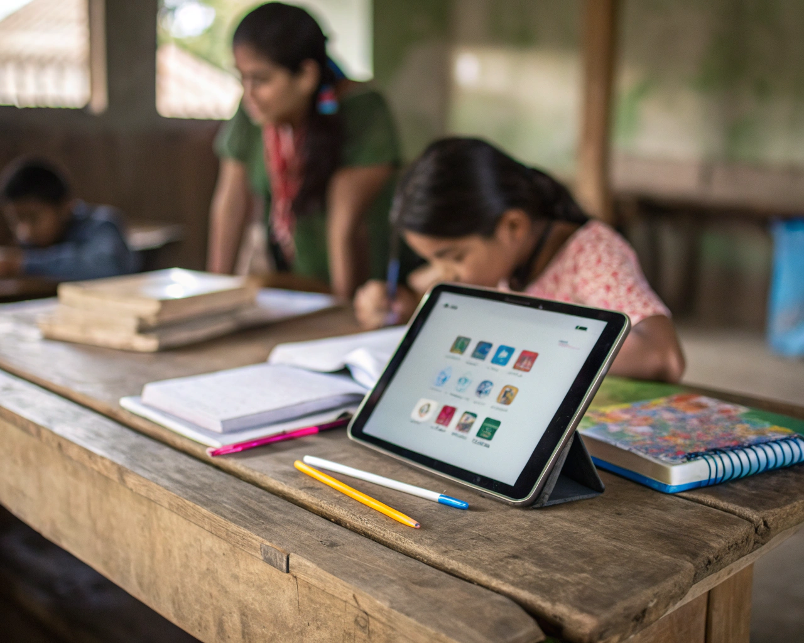
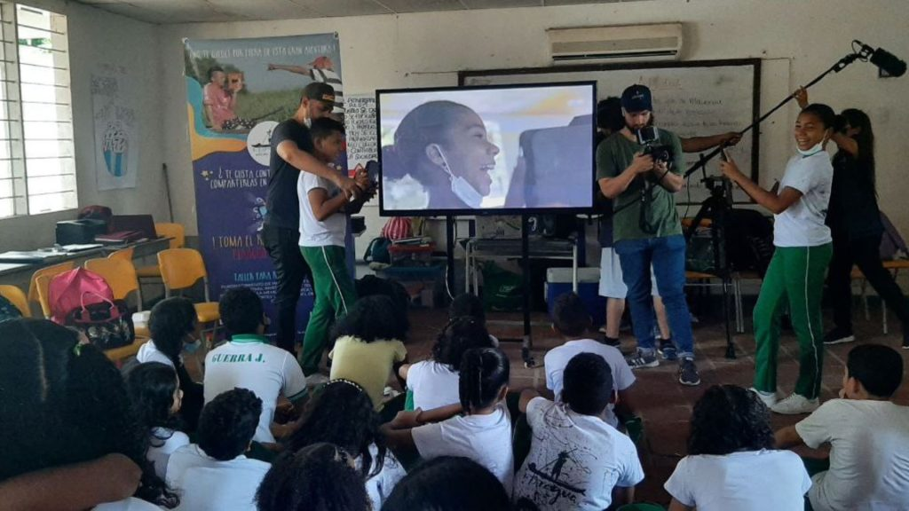
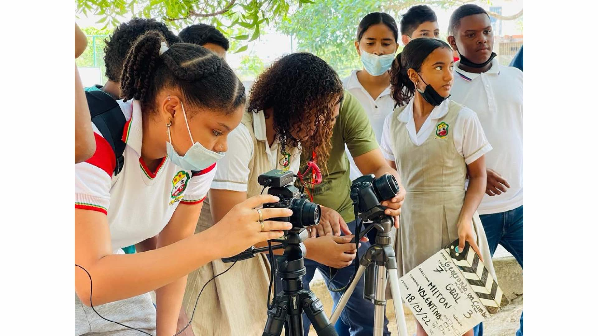

Diagnóstico comunitario
Identificamos necesidades digitales, culturales y sociales.
Desarrollamos iniciativas que fortalecen capacidades, impulsan la participación comunitaria y generan oportunidades para las comunidades insulares.
Desde Corporación Insular Digital promovemos procesos formativos y creativos que conectan a las personas con herramientas, conocimientos y espacios de participación. Nuestros programas buscan responder a las realidades de las comunidades insulares desde la educación digital, la comunicación y la creación audiovisual.



Formación para reducir brechas digitales y ampliar oportunidades.
La Estrategia de Alfabetización e Inclusión Digital es un programa orientado a promover el acceso, conocimiento y uso adecuado de las tecnologías de la información y la comunicación en comunidades insulares y poblaciones con acceso limitado a procesos de formación tecnológica.
A través de jornadas pedagógicas, talleres prácticos, espacios de socialización y experiencias participativas, acercamos a niños, jóvenes, familias y líderes comunitarios al mundo digital desde una perspectiva sencilla, útil y adaptada a sus realidades.
Nuestro enfoque busca fortalecer capacidades para el uso responsable de internet, las redes sociales, las herramientas digitales y los dispositivos tecnológicos, promoviendo una cultura digital basada en la seguridad, la creatividad, el aprendizaje y la participación ciudadana.
Más que enseñar tecnología, impulsamos procesos de apropiación digital que permitan a las personas utilizar las herramientas tecnológicas como medios para acceder a información, generar oportunidades, fortalecer sus proyectos de vida y participar activamente en la sociedad actual.



Programa de creación audiovisual comunitaria.
Crea Cine Insular es una estrategia de formación y creación audiovisual dirigida a niños, niñas, adolescentes y jóvenes de las comunidades insulares, orientada al desarrollo de habilidades en cine, producción audiovisual, comunicación comunitaria y construcción ciudadana.
A través de talleres, laboratorios creativos y experiencias prácticas, los participantes aprenden herramientas relacionadas con la fotografía, el video, el sonido, la narrativa audiovisual, la creación de contenidos digitales y las distintas etapas de producción cinematográfica.
El programa busca fortalecer capacidades creativas, comunicativas y técnicas, promoviendo al mismo tiempo el pensamiento crítico, la participación comunitaria, el liderazgo juvenil y el reconocimiento del territorio como escenario de aprendizaje, expresión e identidad.
Crea Cine Insular entiende el cine y la comunicación como herramientas para la transformación social, permitiendo que las nuevas generaciones cuenten sus propias historias, visibilicen sus realidades y participen activamente en la construcción de comunidades más informadas, creativas y conectadas.
Aplicamos una metodología participativa enfocada en formación, práctica e impacto comunitario.
Identificamos necesidades digitales, culturales y sociales.
Capacitaciones presenciales y acompañamiento continuo.
Desarrollo de proyectos reales en territorio.
Medimos resultados y fortalecemos procesos.
Nuestras iniciativas conectan el aprendizaje, la creación, la participación y la innovación social.
Sumemos esfuerzos para fortalecer procesos comunitarios, culturales y educativos.